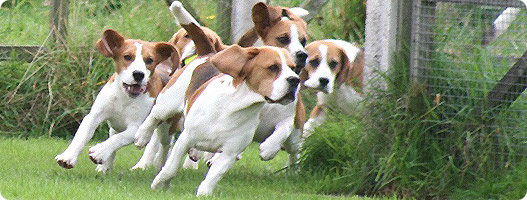

Welcome to MJ's Beagle Rescue Ranch! Since 2012, we have been providing a loving home for rescued beagles while they wait to find their perfect forever home. Located on a sprawling 40 acre ranch just southeast of Portland, OR, our beloved beagles run, play, and cuddle from morning til night- come meet our furry friends today!
Beagles are curious, friendly, and merry dogs. A member of the hound family, working beagles are primarily used to hunt rabbits and larger hares using their highly attuned sense of smell. While beagles love to cuddle with their human companion, they require a lot of exercise. If you're looking for a loving, versatile dog that is good with kids, beagles are the perfect choice for you!
To learn more about Beagles, check out our resource page!